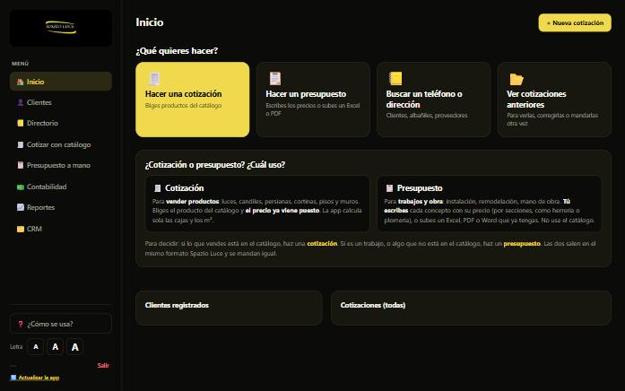
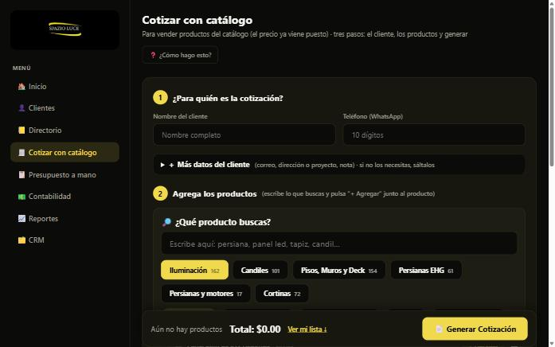
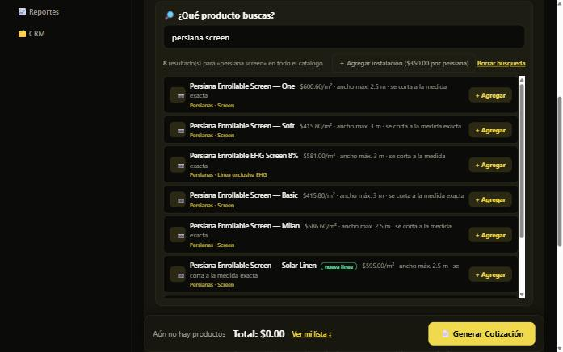
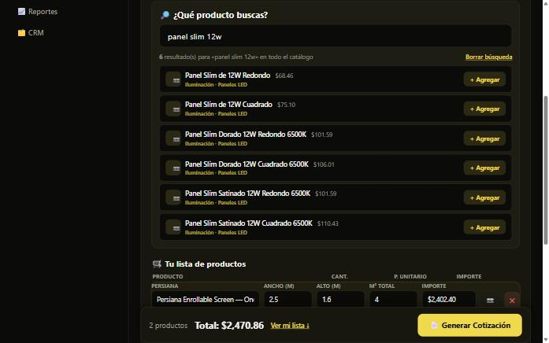
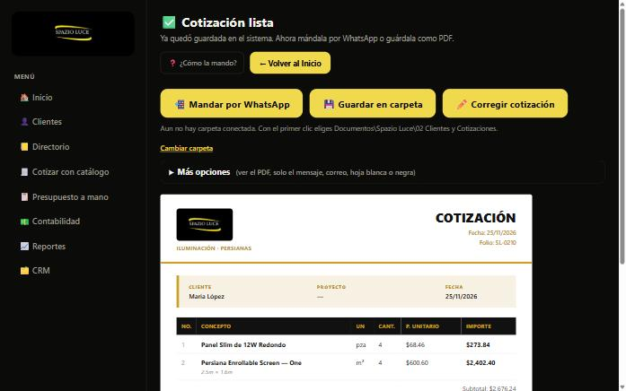
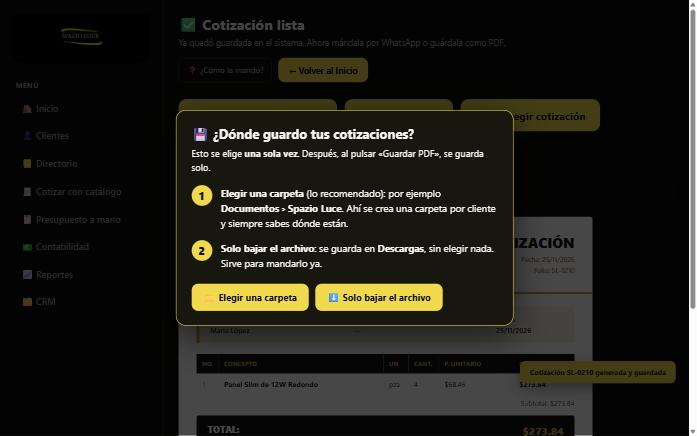
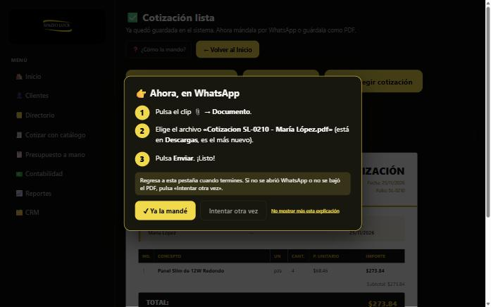
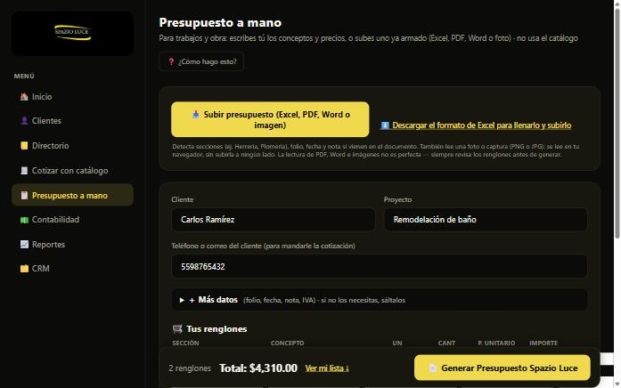
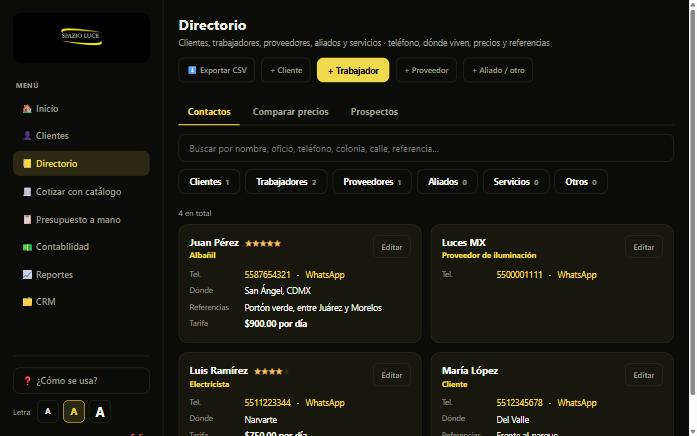

Entra a la app y pulsa el botón amarillo grande Hacer una cotización.
Escribe el nombre y el teléfono del cliente.
En ¿Qué producto buscas? escribe una palabra (por ejemplo "persiana") y pulsa + Agregar.
En Tu lista de productos escribe la cantidad o las medidas.
Pulsa Generar Cotización, luego 💾 Guardar PDF y 📲 Mandar por WhatsApp.
1. Para entrar a la app
Abre Google Chrome o Microsoft Edge en la computadora.
Escribe esta dirección y pulsa Enter: salvarezdelfin-glitch.github.io/spazio-luce-cotizador. Guárdala en favoritos (estrellita arriba a la derecha) para no tener que escribirla otra vez.
Escribe tu correo y tu contraseña y pulsa Entrar.
Si las letras se ven muy chicas
Abajo en el menú de la izquierda, junto a la palabra "Letra", hay tres letras A (chica, mediana y grande). Pulsa la que se te lea mejor. Se queda guardada.
Si la app se ve diferente o le falta algo
Abajo en el menú pulsa 🔄 Actualizar la app. Descarga la versión más nueva.
2. La pantalla de Inicio
Al entrar ves cuatro botones grandes. El amarillo es el que más vas a usar.

Pantalla de Inicio. A la izquierda está el menú: ahí puedes cambiar de pantalla cuando quieras.
Botón
Para qué sirve
Hacer una cotización
Cuando vas a vender productos del catálogo (luces, persianas, cortinas, pisos…). El precio ya viene puesto.
Hacer un presupuesto
Cuando es un trabajo u obra (instalación, remodelación, mano de obra). Tú escribes los conceptos y precios.
Buscar un teléfono o dirección
Abre el Directorio: clientes, albañiles, electricistas, proveedores.
Ver cotizaciones anteriores
Para verlas, corregirlas o mandarlas otra vez.
¿Cotización o presupuesto? Una regla fácil
Si lo que vendes está en el catálogo, haz una cotización. Si es un trabajo, o algo que no está en el catálogo, haz un presupuesto. Las dos salen en el mismo formato de Spazio Luce y se mandan igual.
3. Hacer una cotización, paso por paso
Paso 1 · ¿Para quién es?
Pulsa Hacer una cotización en el Inicio (o Cotizar con catálogo en el menú).
Escribe el nombre del cliente y su teléfono (10 dígitos, para poder mandarle la cotización por WhatsApp).
Lo demás (correo, dirección, nota) es opcional: está en ＋ Más datos del cliente. Si no lo necesitas, sáltalo.

Arriba el nombre y teléfono. Abajo, el buscador de productos.
Paso 2 · Buscar y agregar los productos
En ¿Qué producto buscas? escribe una palabra: persiana, panel, tapiz, candil, cortina…
Salen los productos que coinciden, con su precio. Pulsa + Agregar junto al que quieres.
Repite con cada producto. Puedes buscar otra palabra las veces que necesites.
Si el producto no está en el catálogo, pulsa + Agregar un producto que no está en el catálogo y escribe su nombre y precio.

Buscando "persiana screen": cada resultado trae su botón + Agregar.
Paso 3 · Poner cantidades o medidas
Lo que agregaste aparece en Tu lista de productos. Cada renglón pide algo distinto según el producto:
Tipo de producto
Qué escribes
Por pieza (focos, paneles, candiles)
La cantidad en la casilla Cant.
Por caja (pisos, muros, deck)
El largo y ancho en metros, o los m² totales. La app calcula sola cuántas cajas hacen falta.
Persianas y cortinas por medida
El ancho y alto en metros (o los m² totales). Si lleva instalación, pulsa el botón + Agregar instalación.
El Importe de cada renglón y el Total se calculan solos. Abajo de la pantalla siempre ves cuántos productos llevas y el total.

La barra de abajo te sigue siempre: cuántos productos llevas, el Total y el botón amarillo Generar Cotización.
Si te equivocas
En cada renglón hay un botón rojo con una ✕: quita ese producto. Puedes cambiar la cantidad cuando quieras antes de generar.
Paso 4 · Generar
Revisa que el total se vea bien.
(Opcional) Abre 📝 Condiciones si quieres cambiar o agregar condiciones para esta cotización. Si no, salen las de siempre.
Pulsa el botón amarillo 📄 Generar Cotización. Si falta algo (por ejemplo el nombre) la app te lleva al lugar y te dice qué falta.
4. Guardar el PDF y mandárselo al cliente
Cuando pulsas Generar Cotización aparece la pantalla ✅ Cotización lista. La cotización ya quedó guardada en el sistema. Ahora falta guardar el PDF y mandárselo al cliente. Son dos botones, uno por uno:

Pantalla "Cotización lista": los tres botones grandes de arriba.
A) Guardar el PDF — botón 💾 Guardar PDF
Pulsa 💾 Guardar PDF.
La primera vez te pregunta dónde guardar. Elige 📁 Elegir una carpeta y escoge una (por ejemplo Documentos › Spazio Luce). Eso se hace una sola vez.
Desde ahí, cada cotización se guarda sola en una carpeta con el nombre del cliente. Para encontrarla: abre Documentos › Spazio Luce › nombre del cliente.

La primera vez sale esta ventana. Si no quieres elegir carpeta, pulsa Solo bajar el archivo: el PDF se guarda en Descargas.
¿Dónde quedó un PDF que bajé?
En Chrome pulsa las teclas Ctrl + J. Sale la lista de lo que has descargado, con el más nuevo arriba. Pulsa Mostrar en carpeta junto al archivo y se abre la carpeta donde está.
B) Mandar el PDF al cliente — botón 📲 Mandar por WhatsApp
Pulsa 📲 Mandar por WhatsApp. Sale una ventana que explica los 3 pasos. Pulsa el botón amarillo Abrir WhatsApp y bajar el PDF.
Se baja el PDF a Descargas y se abre WhatsApp con el chat del cliente y el mensaje ya escrito.
En WhatsApp pulsa el clip 📎, luego Documento, y elige el archivo «Cotizacion … .pdf» (es el más nuevo de la carpeta Descargas).
Pulsa Enviar. ¡Listo! Regresa a la app y pulsa Ya la mandé.

Esta ventana se queda abierta para que no se te olvide qué sigue en WhatsApp.
Si usas celular o iPad
Es más fácil: al pulsar Mandar por WhatsApp se abre la hoja de compartir con el PDF ya adjunto. Solo eliges WhatsApp y el chat del cliente.
Si algo sale mal
Si no se abrió WhatsApp o no se bajó el PDF, pulsa Intentar otra vez en la ventana. Si aun así no se baja, pulsa 💾 Guardar PDF y luego adjunta ese archivo en WhatsApp con el clip 📎.
C) Corregir algo — botón ✏️ Corregir cotización
Si te equivocaste, te regresa a la cotización con todo lleno. Cambia lo que quieras y pulsa Guardar cambios; luego vuelve a guardar y mandar el PDF.
En Más opciones hay otras cosas: ver o imprimir el PDF, mandar solo el mensaje, abrir el correo y elegir la hoja Blanca o Negra.
¿Dónde encuentro una cotización que ya hice?
En el Inicio, baja a Cotizaciones (todas). Ahí puedes pulsar Ver para abrirla, Editar para corregirla, o cambiar su estatus (Enviada, Aprobada…).
5. Hacer un presupuesto a mano
Úsalo para trabajos y obra, o cuando ya tienes la lista de conceptos y precios.
Pulsa Hacer un presupuesto (o Presupuesto a mano en el menú).
Escribe el cliente, el proyecto y su teléfono.
Pulsa + Agregar renglón manual y llena Sección (opcional, por ejemplo "Baño"), Concepto (el nombre del trabajo), Un (m², pza…), Cant y P. Unitario.
Pulsa Generar Presupuesto Spazio Luce.

Presupuesto a mano. Arriba el botón para subir un archivo.
¿Ya tienes el presupuesto en un archivo?
Pulsa Subir presupuesto y elige un Excel, PDF, Word o una foto (PNG o JPG). La app lee los renglones y los pone en la lista. Siempre revisa nombre, cantidad y precio antes de generar: la lectura de PDF, Word y fotos puede equivocarse. También puedes bajar el formato de Excel, llenarlo y subirlo: es la forma más segura.
Si los precios son los que te dio un proveedor
Abre ⚙️ Si los precios son los del proveedor y pulsa Aplicar a los precios. Si te equivocas, pulsa Deshacer.
6. Las condiciones del final
Al final de cada cotización salen las condiciones (anticipo, vigencia, garantía…). Ya vienen escritas: son las de siempre de Spazio Luce.
Para cambiarlas solo en esta cotización: abre 📝 Condiciones que saldrán al final y escribe o borra renglones (una condición por renglón).
Para cambiarlas para todas las cotizaciones nuevas: déjalas como quieras y pulsa Guardar como las de siempre.
Para volver a las de siempre: pulsa Poner las de siempre.
7. El Directorio (teléfonos y direcciones)
Ahí está todo lo que necesitas para encontrar a alguien: clientes, trabajadores (albañiles, electricistas…), proveedores, aliados y servicios.
Escribe en el buscador un nombre, una colonia o un oficio ("albañil").
Pulsa WhatsApp junto al teléfono para abrir el chat.
Para agregar a alguien: + Cliente, + Trabajador, + Proveedor o + Aliado / otro.
La pestaña Comparar precios te muestra quién cobra menos por el mismo trabajo, y Prospectos es para la gente nueva que quieres contratar.

Directorio: filtros arriba por tipo de persona y el buscador.
8. Si algo no sale como esperabas
Lo que pasa
Qué hacer
La app se ve vieja o le faltan botones
Pulsa 🔄 Actualizar la app (abajo en el menú) o, en el teclado, Ctrl + Shift + R.
Dice "Escribe el nombre del cliente"
Es el único dato obligatorio. La app te lleva al lugar: escribe el nombre y vuelve a pulsar Generar.
Dice "Agrega al menos un producto"
Aún no hay nada en Tu lista de productos. Busca un producto y pulsa + Agregar.
No sé qué escribir en un renglón
Pulsa ❓ ¿Cómo hago esto? arriba de la pantalla: te explica lo que estás haciendo.
Me equivoqué en una cotización que ya generé
Pulsa ✏️ Corregir cotización (o Editar en la lista del Inicio).
No sé dónde quedó el PDF
Pulsa Ctrl + J en Chrome: sale la lista de descargas con el más nuevo arriba. O pulsa 💾 Guardar PDF y elige una carpeta.
No se abre WhatsApp
Pulsa Intentar otra vez en la ventana de pasos. Si sigue igual, guarda el PDF y adjúntalo a mano con el clip 📎.
Perdí una cotización
No se pierde: en el Inicio baja a Cotizaciones (todas) y búscala por el nombre del cliente.
9. Palabras que salen en la app
Palabra
Qué significa
Cotización
Documento con productos del catálogo y su precio, para el cliente.
Presupuesto
Documento de un trabajo u obra, con conceptos y precios escritos por nosotros.
Folio
El número de la cotización (SL-0210). Se pone solo.
Catálogo
La lista de todos los productos con su precio.
IVA incluido
El precio del catálogo ya trae el IVA. Así se cobra siempre, no hay que sumarlo.
Precio LAB
El precio de costo del proveedor. No se usa para el cliente.
Directorio
Teléfonos y direcciones de clientes, trabajadores y proveedores.
Prospecto
Una persona nueva a la que queremos contratar.
Spazio Luce · Sistema de Gestión · Si algo no se entiende, pulsa ❓ ¿Cómo se usa? en la app o pregúntale a Sebastián.